Tác phẩm của William F. Talbert & Bruce S. Old
Lời Tựa & Lời Nói Đầu
LỜI TỰA CỦA ARTHUR R. ASHE
Thật vô cùng thích hợp khi Bill Talbert và Bruce Old tiếp tục cho ra mắt một cuốn sách hướng dẫn quần vợt mới — lần này tập trung chuyên sâu vào đề tài Chiến thuật Tennis (Tennis Tactics). Tác phẩm trước đây của họ về đánh đôi (The Game of Doubles in Tennis) cho đến nay vẫn là công trình mang tính kinh điển và chuẩn mực nhất về lĩnh vực này.
Cuốn sách Chiến thuật Tennis này mang trong mình giá trị thực tiễn cho mọi đối tượng. Không một ai có thể đọc hết toàn bộ cuốn sách này chỉ trong một lần; nhưng cuốn sách hay đến mức niềm thôi thúc muốn nghiền ngẫm, khám phá nó một cách tường tận sẽ là điều vô cùng khó cưỡng lại đối với bất kỳ người yêu tennis chân chính nào.
Phần lớn các cuốn sách dạy tennis từ trước đến nay đều chỉ tập trung vào việc tạo lập động tác kỹ thuật (stroke production). Trong bối cảnh hiện nay có hơn 30 triệu người chơi tennis trên toàn cầu, đa số mọi người dường như đều đã biết cách đánh một quả thuận tay hay trái tay, nhưng lại có rất ít người thực sự thấu hiểu cái “nguyên cớ” và “lý do cốt lõi” (the why and wherefores) phía sau từng quyết định đường bóng.
Tôi muốn gợi ý một phương pháp thú vị để bạn thưởng thức và khai thác cuốn sách này: Trước hết, hãy đọc kỹ một vài phần mà bạn cảm thấy hứng thú nhất. Sau đó, hãy ngồi xuống và theo dõi một giải đấu quần vợt truyền hình trực tiếp tiếp theo — chẳng hạn như US Open — rồi thử liên hệ những gì bạn đã thẩm thấu từ Chiến thuật Tennis với những gì các tay vợt chuyên nghiệp hàng đầu thế giới đang phô diễn trên sân. Bạn sẽ phải kinh ngạc trước sự tương đồng đáng kinh ngạc; hoặc thậm chí tốt hơn nữa, bạn sẽ hiểu được tại sao có một số tay vợt chuyên nghiệp đáng lẽ nên dành thời gian đọc cuốn Chiến thuật Tennis này cho chính bản thân họ.
Dành cho người mới bắt đầu đang khao khát nắm vững chiến lược trong tầm tay, cho đến những tay vợt nâng cao đang tìm kiếm một lợi thế vượt trội trên sân đấu, Chiến thuật Tennis giải đáp thỏa đáng những câu hỏi hóc búa nhất.
Một lời nhắn nhủ cuối cùng: Cả Chiến thuật Tennis lẫn bất kỳ cuốn sách nào khác đều không thể thay thế hoàn toàn những buổi tập trực tiếp với các huấn luyện viên chuyên nghiệp dày dạn kinh nghiệm trên sân thực tế. Trong lúc này, hãy mở vợt ra sau thật sớm, vung vợt theo đà dứt điểm chuẩn xác, và tận hưởng trọn vẹn những giờ phút tuyệt vời trên sân đấu!
ARTHUR R. ASHE
New York, 1983
LỜI NÓI ĐẦU CỦA CHRIS EVERT LLOYD
Môn thể thao quần vợt đòi hỏi một sự phối hợp chuẩn xác tuyệt đối giữa trí tuệ thông minh, sự tự tin bản lĩnh và kỹ năng điêu luyện. Hai thể thức thi đấu — đánh đơn và đánh đôi — đòi hỏi những chiến thuật hoàn toàn khác biệt nhau.
Cuốn sách nền tảng này của Bill Talbert và Bruce Old lần đầu tiên mang đến cho người đọc, gói gọn trọn vẹn trong một tác phẩm duy nhất, những chỉ dẫn vô giá về các chiến lược độc đáo áp dụng cho cả nội dung đánh đơn lẫn đánh đôi. Tôi tin tưởng sâu sắc rằng tác phẩm này sẽ là một cẩm nang tham khảo có giá trị thực tiễn vô cùng to lớn xuyên suốt toàn bộ sự nghiệp chơi tennis của bạn.
Tôi trân trọng giới thiệu cuốn sách này để bạn nghiên cứu, nghiền ngẫm lặp đi lặp lại nhiều lần!
CHRIS EVERT LLOYD
Fort Lauderdale, Florida, 1983
MỤC LỤC TỔNG QUAN
GIỚI THIỆU CHUNG
Cuốn sách này mang trong mình một mục tiêu độc nhất vô nhị. Khác biệt với bất kỳ công trình nào từng được viết về quần vợt trong lịch sử, tác phẩm này được dành trọn vẹn để trình bày — trong cùng một tập sách duy nhất — một khảo cứu tường tận, chi tiết về các chiến thuật nền tảng được vận dụng để giành chiến thắng trong cả hai thể thức: Đánh đơn (Singles) và Đánh đôi (Doubles).
Phương pháp diễn đạt được thiết kế giản dị, khúc chiết nhưng mang tính chuẩn mực và uy quyền chuyên môn cao nhất. Tác phẩm hướng đến mọi đối tượng: từ các tay vợt thi đấu giải đỉnh cao cho đến những người mới bước vào sân tập, từ thanh thiếu niên đến bậc lão tướng, cho cả nam lẫn nữ. Để lĩnh hội trọn vẹn giá trị, người đọc không cần phải là một vận động viên siêu đẳng, nhưng một hiểu biết căn bản về cách thức tạo lập các cú đánh và các luật lệ thi đấu quần vợt sẽ giúp ích rất nhiều.
Trong quần vợt, chiến thuật chính là nghệ thuật và khoa học của việc triển khai, điều động các nguồn lực trên sân nhằm đánh bại đối phương. Trước mỗi một cú đánh của đối thủ đang bay tới, não bộ của một tay vợt phải phân tích và giải quyết hàng loạt biến số phức tạp trong khoảng thời gian thường chưa đầy nửa giây (0.5 giây):
- Quỹ đạo và tốc độ: Quả bóng đang lao tới với vận tốc bao nhiêu, độ xoáy gì (cắt, cuộn topspin, hay phẳng), và sẽ nảy lên ở độ cao nào?
- Vị trí của bản thân: Mình phải di chuyển đến tọa độ nào trên mặt sân để tiếp xúc bóng ở điểm tối ưu nhất trong tầm với?
- Vị trí và điểm yếu của đối thủ: Đối thủ đang đứng lệch về góc nào, đang băng lên lưới hay cố thủ ở vạch cuối sân? Hông đối thủ đang hở ở mạn nào?
- Lựa chọn đòn đáp trả: Mình nên đánh thẳng dọc dây (down the line), ép chéo sân (crosscourt), lốp bóng qua đầu (lob) hay bỏ nhỏ (drop shot)? Dùng độ xoáy nào và với lực bao nhiêu?
- Vị trí hồi phục ngay sau đó: Ngay sau khi vung vợt xong, mình phải lập tức phục hồi về vị trí nào để đón cú đánh trả tiếp theo của đối phương?
Rõ ràng, việc ra quyết định chiến thuật trong quần vợt diễn ra tức thời đến mức người chơi buộc phải rèn luyện để biến các nguyên lý chiến thuật thành bản năng tự nhiên. Cuốn sách này được biên soạn chính là để trang bị cho bạn bản năng chiến thuật sắc bén đó.
PHƯƠNG PHÁP ĐỌC SƠ ĐỒ CHIẾN THUẬT (DIAGRAM METHOD)
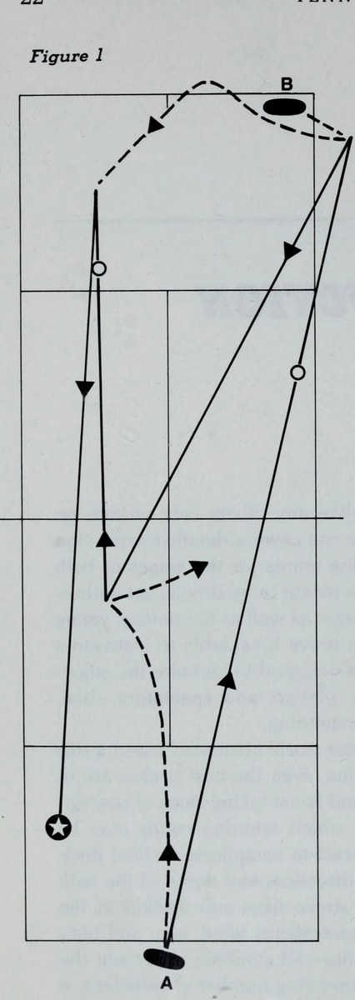
Quy ước ký hiệu trên sân:
- A Người chơi A: Đang ở vị trí giao bóng cuối sân.
- B Người chơi B: Đang ở vị trí đón giao bóng.
- —— Đường nét liền: Đường bay của quả bóng (flight of the ball). Kèm số thứ tự cú đánh (1, 2, 3...).
- - - - - Đường nét đứt: Đường di chuyển của người chơi (movement of players).
Phân tích diễn biến điểm số mẫu:
Sơ đồ này minh họa phương pháp trực quan được áp dụng xuyên suốt toàn bộ tác phẩm. Nó cũng đồng thời vạch trần cách thức mà hai sai lầm chiến thuật liên tiếp của tay vợt A đã khiến anh ta đánh mất điểm số này:
- Cú đánh (1): Tay vợt A giao bóng sâu vào góc trái tay của tay vợt B, sau đó lập tức lao lên lưới (rush to net) để tìm kiếm cú vô-lê dứt điểm.
- Cú đánh (2): Người đón bóng B tung ra cú trả giao bóng chéo sân (crosscourt return) bằng quả trái tay.
- Cú đánh (3) — Sai lầm chiến thuật thứ nhất: Tay vợt A thực hiện cú vô-lê đón trả bóng. Tuy nhiên, anh ta mắc sai lầm nghiêm trọng khi vô-lê bóng trở lại chính mạn sân mà tay vợt B vừa thực hiện cú trả giao bóng, thay vì mở rộng góc đánh sang phần sân trống đối diện! Sai lầm này cho phép B tiếp cận bóng mà không phải di chuyển nhiều.
- Cú đánh (4): Người đón bóng B di chuyển nhẹ sang ngang và tung ra một cú đánh dọc dây (down the line).
- Sai lầm chiến thuật thứ hai: Sau cú vô-lê (3), tay vợt A đã di chuyển lệch quá nhiều sang bên phải sân của mình, để lại một khoảng trống mênh mông dọc dây bên trái. Cú đánh (4) của B bay vút qua người A để ghi điểm thắng trực tiếp (clean passing winner)!
LƯỢC SỬ QUẦN VỢT
Quần vợt sân cỏ hiện đại bắt đầu xuất hiện tại nước Anh vào năm 1873 với phát minh của Thiếu tá Walter Clopton Wingfield. Bản mô tả đầu tiên về trò chơi được ông ghi lại trong cuốn cẩm nang nhỏ mang tên The Major's Game of Lawn Tennis, đề tặng bữa tiệc họp mặt tại tư dinh Nantclwyd vào tháng 12 năm 1873.
Thiếu tá Wingfield đã không thể cưỡng lại việc đưa ra những lời khuyên chiến thuật đầu tiên trong lịch sử quần vợt:
“Hãy đánh bóng nhẹ nhàng, và quan sát thật kỹ trước khi vung vợt, cốt sao cho bóng rơi vào góc sân xa nhất so với đối thủ của bạn. Một lượng xoáy cạnh rất lớn có thể được truyền vào bóng bằng một cảm giác chạm vợt tinh tế; điều này kết hợp với sự ước lượng lực chuẩn xác sẽ gia tăng đáng kể độ tinh xảo và tính khoa học của trò chơi.”
Trải qua hơn một thế kỷ, kích thước sân bãi, chiều cao của lưới và hệ thống tính điểm dần được chuẩn hóa. Giải Vô địch Wimbledon đầu tiên ra đời năm 1877, tiếp theo là Giải Vô địch Quốc gia Hoa Kỳ (nay là US Open) năm 1881. Từ lối chơi ban đầu chủ yếu là đánh qua lại nhẹ nhàng từ vạch cuối sân, các trường phái chiến thuật bắt đầu phân hóa mạnh mẽ: từ lối chơi bám biên cuối sân của trường phái Anh-Mỹ sơ khai, đến cuộc cách mạng giao bóng lên lưới sấm sét của Maurice McLoughlin (“Sao chổi California”), sự hoàn hảo đến tột đỉnh của Bill Tilden và Don Budge, cho đến kỷ nguyên phục hưng của các huyền thoại Úc thời hậu chiến (Rod Laver, Ken Rosewall, John Newcombe) và kỷ nguyên mở hiện đại.
| Tên & Quốc tịch | Wimbledon | Giải Vô địch Hoa Kỳ (US Open) | Thành tích Chuyên nghiệp (Pro Tour) |
|---|---|---|---|
| John A. Kramer (Mỹ) | 1947 | 1946, 1947 | Vô địch Pro 1948, 1949, 1950, 1951, 1952 |
| Richard A. Gonzalez (Mỹ) | — | 1948, 1949 | Thống trị Pro: 1953, 1954, 1955, 1956, 1957, 1958, 1959, 1960, 1961 |
| Rodney Laver (Úc) | 1961, 1962, 1968, 1969 | 1962, 1969 | Vô địch Pro 1965, 1966, 1967; Cú đúp Grand Slam năm 1962 & 1969 |
| John Newcombe (Úc) | 1967, 1970, 1971 | 1967, 1973 | Huyền thoại giao bóng lên lưới thế giới |
| Björn Borg (Thụy Điển) | 1976, 1977, 1978, 1979, 1980 | — | 6 Roland Garros, 5 Wimbledon liên tiếp |
| John McEnroe (Mỹ) | 1981, 1983 | 1979, 1980, 1981 | Thiên tài cảm giác bóng và vô-lê đỉnh cao |
| Jimmy Connors (Mỹ) | 1974, 1982 | 1974, 1976, 1978, 1982, 1983 | Vua trả giao bóng và bền bỉ vạch cuối sân |
| Cặp Vận động viên & Quốc tịch | Wimbledon | Giải Vô địch Hoa Kỳ (US Open) |
|---|---|---|
| Jack Kramer & Ted Schroeder (Mỹ) | 1946 | 1940, 1941, 1947 |
| William F. Talbert & Gardnar Mulloy (Mỹ) | — | 1942, 1945, 1946, 1948 (Kỷ lục 4 lần US Doubles) |
| Ken Rosewall & Rex Hartwig / Lew Hoad (Úc) | 1953, 1956 | 1956 |
| John Newcombe & Tony Roche (Úc) | 1965, 1968, 1969, 1970, 1974 | 1967 |
| Stan Smith & Bob Lutz (Mỹ) | — | 1968, 1974, 1978, 1980 |
| John McEnroe & Peter Fleming (Mỹ) | 1979, 1981, 1983 | 1979, 1981, 1983 |
| Tên & Quốc tịch | Wimbledon | Giải Vô địch Hoa Kỳ (US Open) |
|---|---|---|
| Margaret Osborne duPont (Mỹ) | 1947 | 1948, 1949, 1950 |
| Maureen Connolly (Mỹ) | 1952, 1953, 1954 | 1951, 1952, 1953 (Grand Slam năm 1953) |
| Althea Gibson (Mỹ) | 1957, 1958 | 1957, 1958 |
| Maria Bueno (Brazil) | 1959, 1960, 1964 | 1959, 1963, 1964, 1966 |
| Margaret Smith Court (Úc) | 1963, 1965, 1970 | 1962, 1965, 1969, 1970, 1973 (Grand Slam 1970) |
| Billie Jean King (Mỹ) | 1966, 1967, 1968, 1972, 1973, 1975 | 1967, 1971, 1972, 1974 |
| Chris Evert Lloyd (Mỹ) | 1974, 1976, 1981 | 1975, 1976, 1977, 1978, 1980, 1982 |
| Martina Navratilova (Mỹ) | 1978, 1979, 1982, 1983 | 1983 |
BẢN CHẤT CÁC THỂ THỨC THI ĐẤU
Thi đấu đơn và thi đấu đôi trong quần vợt có những nét tương đồng về mặt luật lệ và kỹ thuật cơ bản, nhưng lại là hai thế giới chiến thuật hoàn toàn khác biệt. Để chơi tốt, người chơi bắt buộc phải thấu hiểu sự phân hóa sâu sắc giữa hai thể thức này.
1. Sự khác biệt cốt lõi giữa Đánh đơn và Đánh đôi
Nội dung Đánh đơn (Singles)
- Diện tích bao quát: Một người phải chịu trách nhiệm bao quát toàn bộ mặt sân rộng 8.23m (27 feet).
- Đòi hỏi thể lực phi thường: Tần suất di chuyển đổi hướng liên tục đòi hỏi sức bền tim mạch và tốc độ bứt phá tột độ.
- Chiến thuật đa dạng: Cho phép nhiều trường phái thành công: bám biên cuối sân (baseline grinder), giao bóng lên lưới (serve & volley), hoặc toàn diện (all-court).
- Cuộc chiến tâm lý đơn độc: Người chơi hoàn toàn tự chịu trách nhiệm, không có ai để chia sẻ gánh nặng tinh thần trên sân.
Nội dung Đánh đôi (Doubles)
- Diện tích bao quát: Hai người phối hợp trên mặt sân rộng 10.97m (36 feet) — mỗi người chỉ phải chịu trách nhiệm trung bình 5.48m.
- Đòi hỏi tốc độ phản xạ & phối hợp: Điểm số diễn ra chớp nhoáng, bóng bay ở cự ly gần; sức mạnh tập thể và sự ăn ý vượt lên trên sức bền chạy bộ.
- Quy luật độc tôn: Chiếm lĩnh vị trí trên lưới là con đường duy nhất để áp đảo; hầu như không có đất diễn cho lối chơi phòng ngự thụ động cuối sân.
- Sức mạnh đồng đội: Sự thấu hiểu, động viên và bọc lót lẫn nhau giữa hai đối tác quyết định hơn 50% thắng bại.
2. Khảo sát thống kê tần suất cú đánh và cơ hội ghi điểm
Để xây dựng một hệ thống chiến thuật thực sự khoa học, Talbert và Bruce Old đã tiến hành nghiên cứu định lượng quy mô lớn trên hàng ngàn điểm số đỉnh cao. Kết quả được đúc kết trong các bảng dưới đây:
| Loại cú đánh | Tần suất sử dụng (Sân nhanh) | Điểm thắng trực tiếp (Sân nhanh) | Tần suất sử dụng (Sân chậm) | Điểm thắng trực tiếp (Sân chậm) |
|---|---|---|---|---|
| Giao bóng 1 (First Serve) | 24.5% | 18.0% | 23.0% | 6.0% |
| Giao bóng 2 (Second Serve) | 13.0% | 2.0% | 14.0% | 0.5% |
| Trả giao bóng (Return) | 25.0% | 7.0% | 26.0% | 4.0% |
| Cú vô-lê đầu tiên (First Volley) | 18.0% | 15.0% | 7.0% | 5.0% |
| Vô-lê sau đó (Later Volley) | 7.0% | 8.0% | 3.0% | 3.5% |
| Đập bóng trên đầu (Overhead Smash) | 1.0% | 2.0% | 1.0% | 2.0% |
| Cú đánh passing shot | 9.0% | 8.0% | 10.0% | 9.0% |
| Giằng co cuối sân (Baseline Rally) | 2.0% | 1.0% | 15.0% | 12.0% |
| Lốp bóng (Lob) | 0.5% | 0.0% | 1.0% | 1.0% |
| Loại cú đánh | Tần suất sử dụng | Tỷ lệ ghi điểm thắng |
|---|---|---|
| Giao bóng 1 & 2 (Serve) | 30.0% | 15.0% |
| Trả giao bóng (Return of Service) | 25.0% | 8.0% |
| Cú vô-lê trên lưới (All Volleys) | 33.0% | 28.0% |
| Đập bóng trên đầu (Overhead Smash) | 3.0% | 5.0% |
| Passing shot & bóng cuối sân | 8.0% | 6.0% |
| Lốp bóng (Lob) | 1.0% | 1.0% |
| Vị trí thi đấu | Xác suất thắng điểm trong Đánh đơn | Xác suất thắng điểm trong Đánh đôi |
|---|---|---|
| Chiếm lĩnh trên lưới (Net Position) | 63.5% | 74.0% |
| Khu vực trung lộ / lấp lửng (No-man's Land) | 28.0% | 18.0% |
| Vạch cuối sân (Base-line Position) | 36.5% | 26.0% |
3. Nền tảng kỹ thuật tạo lập động tác (Figures 2–5)
Chiến thuật dù tinh tế đến đâu cũng không thể vận hành nếu thiếu đi một nền tảng kỹ thuật vững chắc. Dưới đây là khảo cứu về các kiểu cầm vợt chuẩn mực của các bậc thầy thế giới:
KIỂU CẦM VỢT EASTERN TAY PHẢI (EASTERN GRIP)
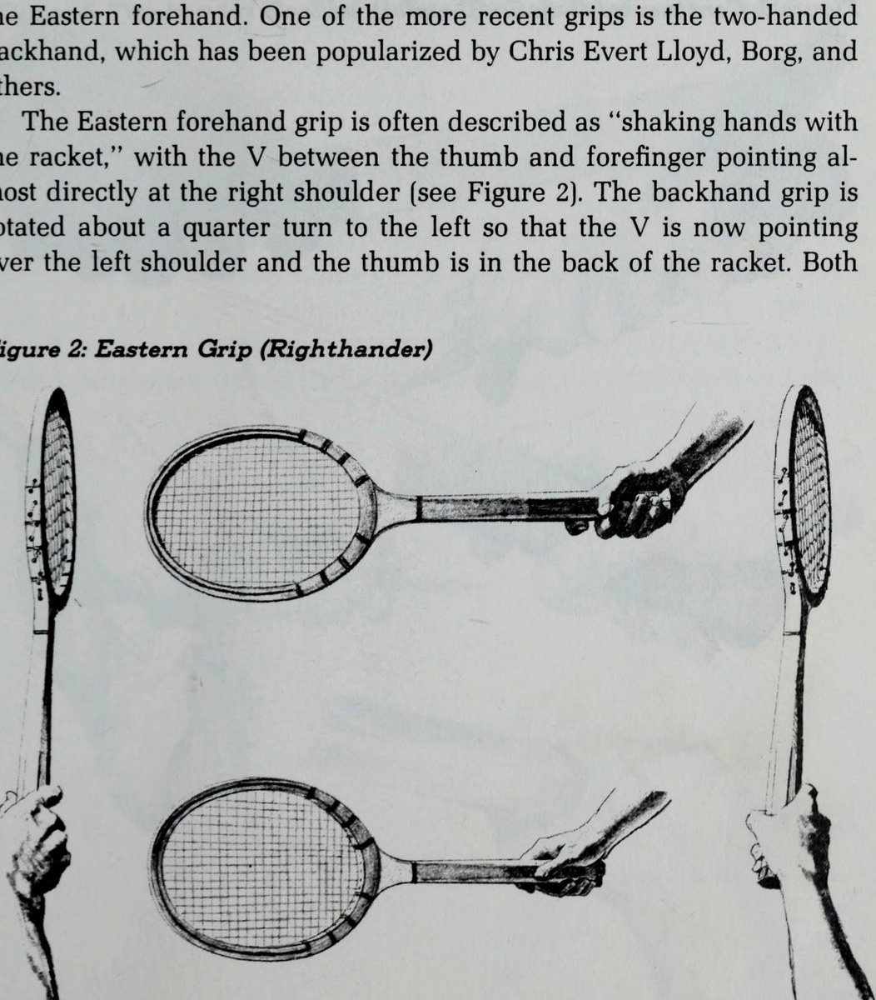
Phân tích kỹ thuật cầm vợt:
Kiểu cầm vợt thuận tay Eastern (Eastern Forehand) thường được ví như hành động “bắt tay với cây vợt” (shaking hands with the racket). Lòng bàn tay áp sát phẳng vào mặt phẳng thẳng đứng của cán vợt, đốt ngón trỏ đặt tựa vào cạnh vát số 3.
Đây là kiểu cầm vợt vô cùng vững chắc (strong grip), cho phép người chơi dễ dàng chống lại áp lực đẩy từ đầu vợt. Nó tạo ra quỹ đạo bóng phẳng, uy lực mạnh mẽ và kiểm soát tuyệt vời trên mặt sân có độ nảy tầm trung bình đến cao. Với quả trái tay Eastern (Eastern Backhand), bàn tay xoay nhẹ ngược chiều kim đồng hồ khoảng một phần tư vòng, ngón tay cái tựa chéo dọc theo sống sau của cán vợt để tạo điểm tựa trợ lực vững chãi.
KIỂU CẦM VỢT CONTINENTAL TAY TRÁI (CONTINENTAL GRIP)
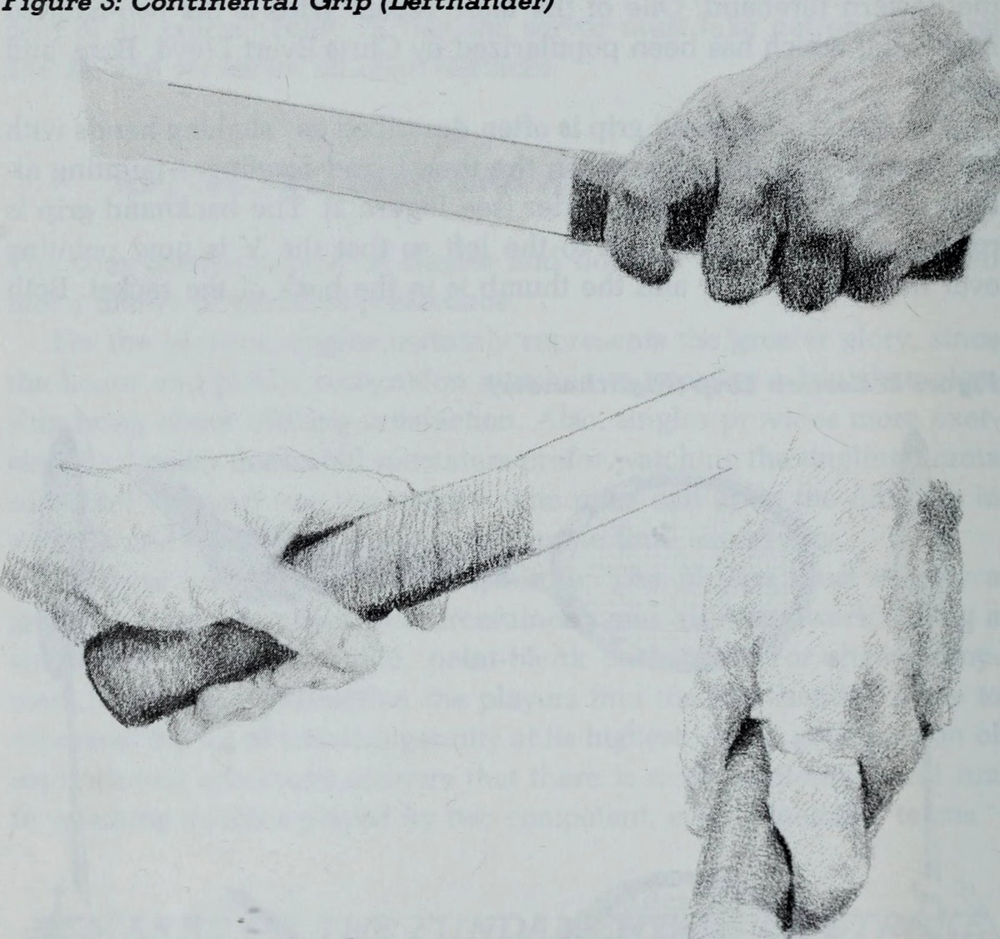
Phân tích kỹ thuật cầm vợt:
Hình 3 minh họa kiểu cầm Continental tay trái trứ danh của huyền thoại Rod Laver. Điểm mạnh vượt trội của Continental là tính vạn năng: người chơi có thể đánh quả thuận tay, trái tay, giao bóng, đập bóng smash và thực hiện toàn bộ các quả vô-lê trên lưới mà không cần phải xoay chuyển cách cầm vợt.
Đặc tính này cực kỳ quý giá trong các pha giao tranh tốc độ cao trên lưới trong đánh đôi, nơi người chơi không có đủ tích tắc thời gian để xoay cán vợt. Tuy nhiên, nó đòi hỏi cổ tay phải rất dẻo dai và khỏe để xử lý các quả bóng nảy cao trên vai.
KIỂU CẦM VỢT TRÁI TAY HAI TAY (TWO-HANDED BACKHAND)
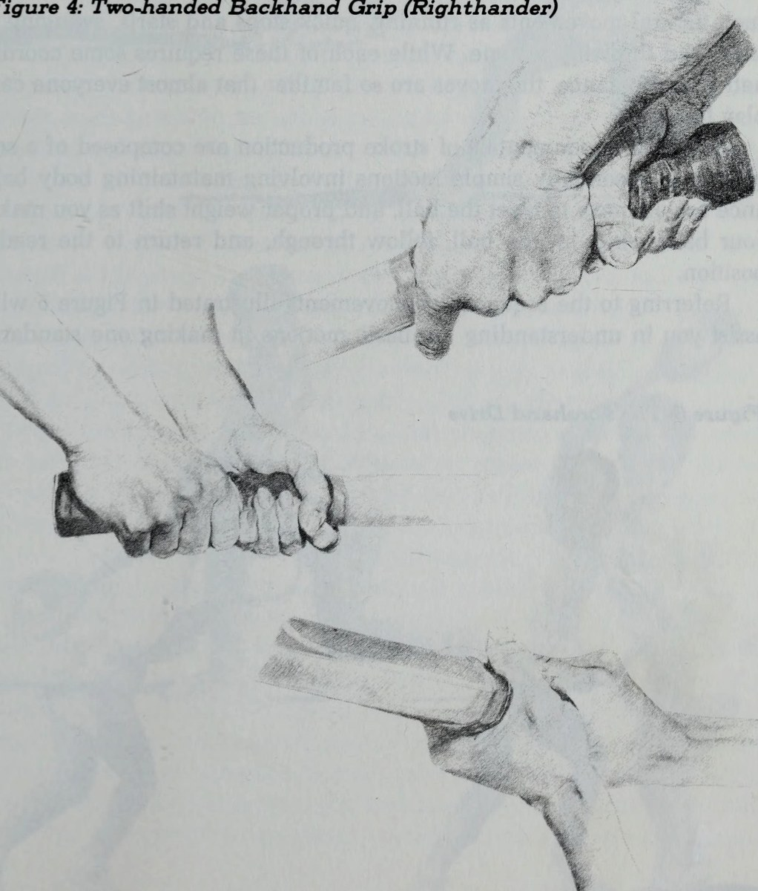
Phân tích kỹ thuật cầm vợt:
Cú trái tay hai tay được đại diện xuất sắc bởi Chris Evert Lloyd. Về bản chất, nó được cấu thành từ hai kiểu cầm Eastern thuận tay: tay dưới giữ chắc cán vợt làm trục, tay trên đóng vai trò dẫn hướng và truyền lực xoáy cuộn topspin.
Ưu thế chiến thuật to lớn nhất của cú hai tay là tính ngụy trang khó đoán (deception): người chơi có thể giữ nguyên tư thế vung vợt đến tích tắc cuối cùng trước khi quyết định bắn bóng dọc dây, ép chéo sân, hoặc bất ngờ mở mặt vợt bỏ nhỏ mà đối thủ không thể phán đoán trước hướng bay!
CHUỖI ĐỘNG TÁC CÚ THUẬN TAY TẤN CÔNG (THE FOREHAND DRIVE)
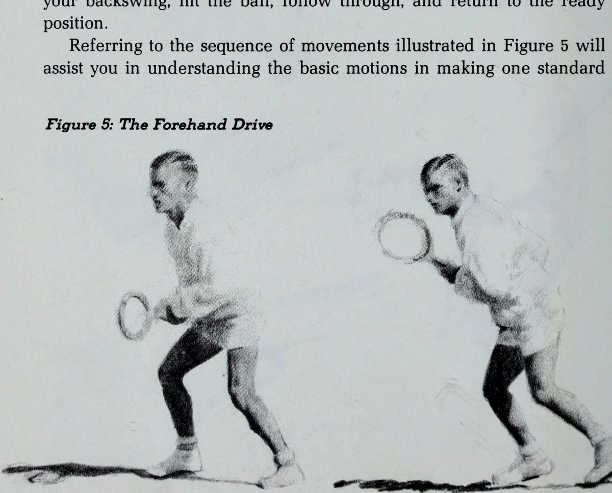
Nguyên lý chuyển động động học:
Hình 5 trình bày toàn bộ chuỗi chuyển động liên hoàn của cú thuận tay chuẩn mực:
- Giai đoạn chuẩn bị: Xoay hông và vai sớm, đưa vợt ra sau theo hình vòng cung nhịp nhàng.
- Hạ đầu vợt: Đầu vợt chúc xuống thấp hơn điểm tiếp xúc bóng dự kiến để sẵn sàng quét lên tạo xoáy.
- Tiếp xúc bóng (Impact): Đón bóng ngang hông phía trước mũi chân trụ, mặt vợt vuông góc với hướng đánh.
- Vung vợt theo đà (Follow-through): Kéo vợt vươn dài ra phía trước theo hướng bóng mục tiêu rồi cuốn tự nhiên qua vai đối diện.
CÚ GIAO BÓNG (THE SERVE)
Cú giao bóng là cú đánh quan trọng bậc nhất trong môn quần vợt vì hai lý do nền tảng. Thứ nhất, nó là cú đánh có tần suất xuất hiện cao nhất: chiếm tới 37.5% tổng số cú đánh trong đánh đơn (Bảng 6) và 30.0% trong đánh đôi (Bảng 7). Thứ hai, đây là cú đánh duy nhất trong trận đấu mà đối thủ hoàn toàn không thể can thiệp vào hành động của bạn — bạn tự tung bóng, tự quyết định thời điểm, tốc độ, độ xoáy và vị trí điểm rơi.
| Tình huống giao bóng | Tỷ lệ giao bóng vào sân | Xác suất thắng điểm của người giao | Tỷ lệ đối thủ mắc lỗi trả bóng |
|---|---|---|---|
| Giao bóng 1 (First Serve) — Uy lực & Chuẩn xác | 60% – 70% | 68% – 78% | 28% – 35% |
| Giao bóng 2 (Second Serve) — An toàn & Giảm lực | 85% – 95% | 45% – 52% | 8% – 12% |
| Giao bóng hỏng cả hai quả (Double Fault) | — | 0.0% (Mất điểm ngay) | — |
BA KIỂU GIAO BÓNG CƠ BẢN (THE THREE BASIC SERVES)
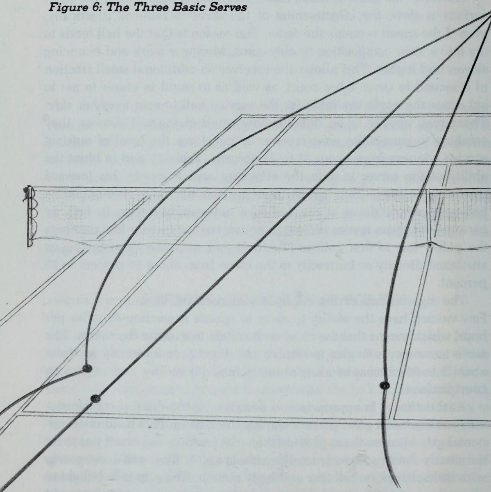
Phân tích 3 quỹ đạo khí động học:
- 1. Cú giao bóng phẳng (Flat Serve): Bóng được tung thẳng ngay trên đầu, mặt vợt tiếp xúc trực diện vuông góc từ phía sau tâm bóng. Quỹ đạo bay căng, vận tốc tối đa, độ nảy thấp và lao thẳng vào người đón bóng. Thường dùng làm đòn dứt điểm ăn điểm trực tiếp (Ace) ở quả giao bóng 1.
- 2. Cú giao bóng cắt xoáy ngang (Slice Serve): Tung bóng chếch nhẹ sang bên phải, mặt vợt miết vòng quanh sườn phải của quả bóng từ ngoài vào trong. Cú đánh tạo xoáy ngang (sidespin) khiến bóng cuộn vòng cung và khi chạm đất sẽ trượt dạt cực mạnh sang phía tay thuận của đối thủ, kéo họ ra xa khỏi mép sân.
- 3. Cú giao bóng xoáy cống (Twist / American Twist / Kick Serve): Tung bóng hơi lệch về phía sau đầu mạn bên trái, mặt vợt quét xéo từ dưới lên trên và chếch ra ngoài qua đỉnh quả bóng. Độ xoáy cống tạo hiệu ứng Magnus khiến bóng bay vồng cao qua lưới an toàn và khi nảy lên sẽ giật nảy ngược lên vai trái tay của người đón, gây cực kỳ nhiều khó khăn khi trả bóng.
CÁC ĐIỂM NGẮM GIAO BÓNG TRONG ĐÁNH ĐƠN (AIM POINTS IN SINGLES)
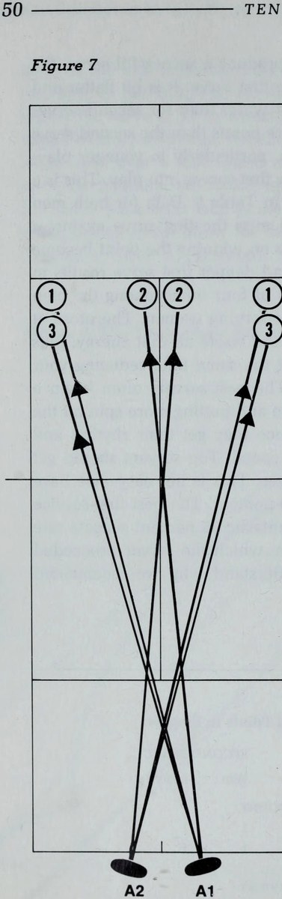
Nguyên lý lựa chọn mục tiêu:
Hình 7A (Giao bóng 1): Phân bổ khoảng 50% số cú giao bóng vào góc chữ T trung lộ (Khu vực 1) để triệt tiêu góc đánh trả của đối thủ, 35% giao bóng mở rộng góc ra biên ngoài (Khu vực 2) nhằm kéo đối thủ bung ra khỏi sân, và 15% giao thẳng trực diện vào thân người (Body serve) để khóa chặt đà vung tay của họ.
Hình 7B (Giao bóng 2): Khu vực an toàn dịch chuyển sâu vào giữa ô giao bóng, duy trì độ xoáy kick serve cao để ép bóng rơi sâu sát vạch giao bóng mà không mạo hiểm đánh sát các mép vạch trắng.
VỊ TRÍ ĐỨNG CỦA HAI ĐỘI TRONG ĐÁNH ĐÔI (TEAM POSITIONS IN DOUBLES)
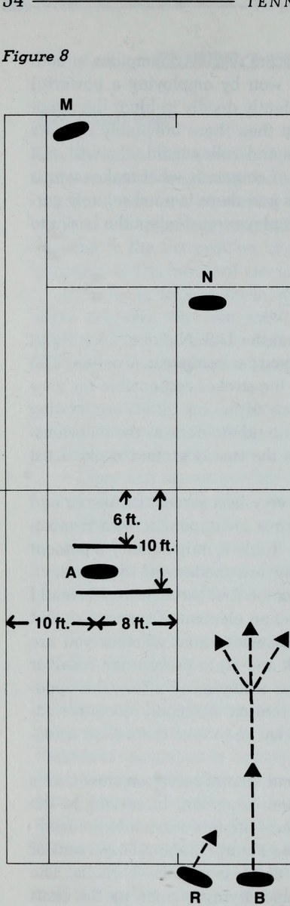
Phân tích hình học vị trí:
Người giao bóng B: Đứng ở khoảng giữa vạch trung tâm và vạch biên đơn (cách vạch giữa khoảng 2m đến 2.5m). Vị trí này mở ra cự ly chạy lên lưới ngắn nhất và cân bằng nhất về mặt hình học để bao quát toàn bộ nửa sân của mình.
Đồng đội đứng lưới A: Đứng cách lưới khoảng 2m đến 2.5m, lệch về phía vạch biên đôi khoảng 1.5m so với tâm ô giao bóng. Vị trí này vừa bịt chặt hành lang dọc dây (alley), vừa sẵn sàng bắt bài (poach) vào giữa.
Người đón bóng M: Đứng trên đường phân giác góc giao bóng, cách vạch cuối sân 0.5m đến 1m tùy theo uy lực giao bóng của B.
Đồng đội người đón N: Đứng ở vị trí lưới biến đổi (Modified Net Position) gần vạch giao bóng T.
ĐIỂM NGẮM GIAO BÓNG TRONG ĐÁNH ĐÔI (AIM POINTS IN DOUBLES)
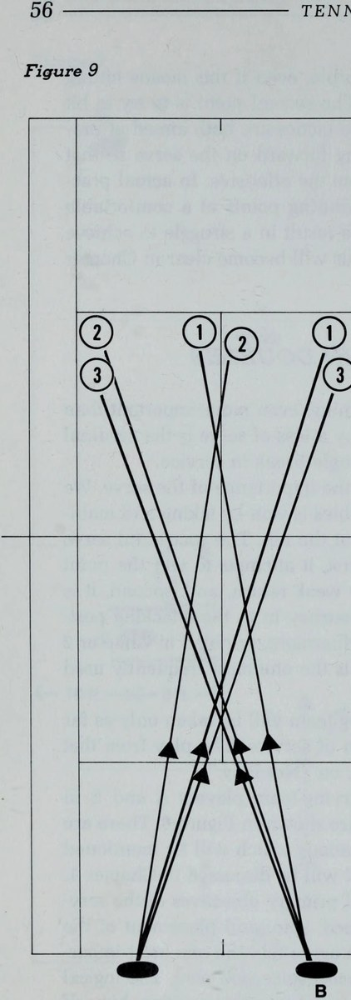
Chân lý chiến thuật đánh đôi:
Trong đánh đôi, khoảng 80% quả giao bóng 1 phải được hướng vào Khu vực 1 (góc chữ T trung lộ). Lý do:
- Giao bóng vào chữ T làm hẹp tối đa góc đánh trả của người đón bóng M.
- Bóng bay vào giữa giúp người đứng lưới A dễ dàng phán đoán và thực hiện cú bắt bài cướp lưới (poach).
- Người giao bóng B khi lao lên lưới chỉ cần di chuyển theo một đường thẳng trực diện để che chắn mạn sân của mình mà không sợ bị khoét vào nách sân.
ẢNH HƯỞNG CỦA ĐIỂM RƠI GIAO BÓNG ĐẾN GÓC TRẢ (EFFECT OF PLACEMENT: CENTER T)
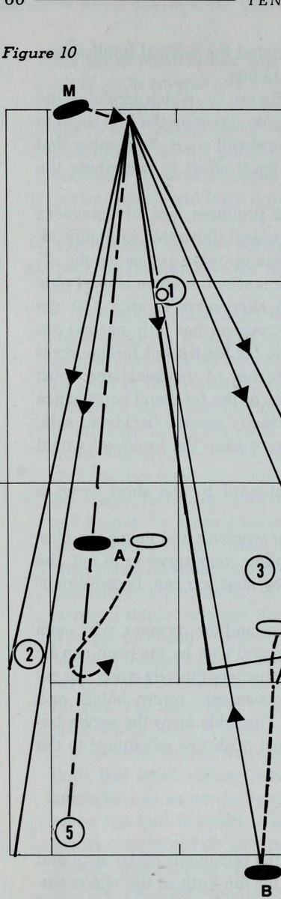
Phân tích nón góc trả bóng:
Khi Server B đưa bóng sâu vào chữ T (Khu vực 1), “nón góc đánh trả” khả thi của Receiver M bị bóp nghẹt lại trong một góc hẹp chưa đầy 25 độ. Góc đánh chéo sân cực hiểm bị loại trừ hoàn toàn bởi vì mép lưới cao và khoảng cách hình học không cho phép. Người đứng lưới A chỉ cần nhích nhẹ một bước là có thể vồ gọn cú trả bóng lỏng lẻo.
ẢNH HƯỞNG CỦA GIAO BÓNG MỞ RỘNG RA BIÊN (EFFECT OF PLACEMENT: WIDE SERVE)
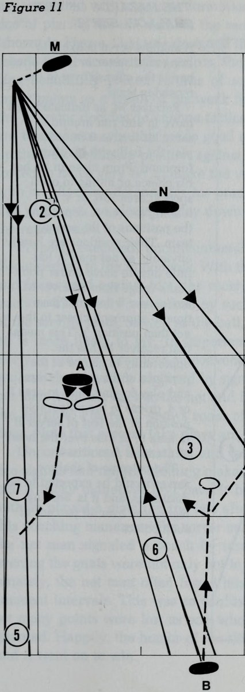
Mối hiểm họa khi giao bóng ra biên ngoài:
Giao bóng slice xé ra biên ngoài (Khu vực 2) kéo Receiver M ra khỏi mép sân đôi. Tuy nhiên, nếu cú giao bóng thiếu tốc độ hoặc thiếu độ xoáy sắc bén, nó sẽ mở toang một góc đánh trả chéo sân cực rộng (lên tới hơn 40 độ), cho phép M bắn bóng vòng qua tầm với của người đứng lưới A hoặc đánh bóng sạt vào chân người giao bóng B đang trên đà lao lên!
HIỂM HỌA TỪ QUẢ GIAO BÓNG NGẮN (THE HAZARDS OF THE SHALLOW SERVE)
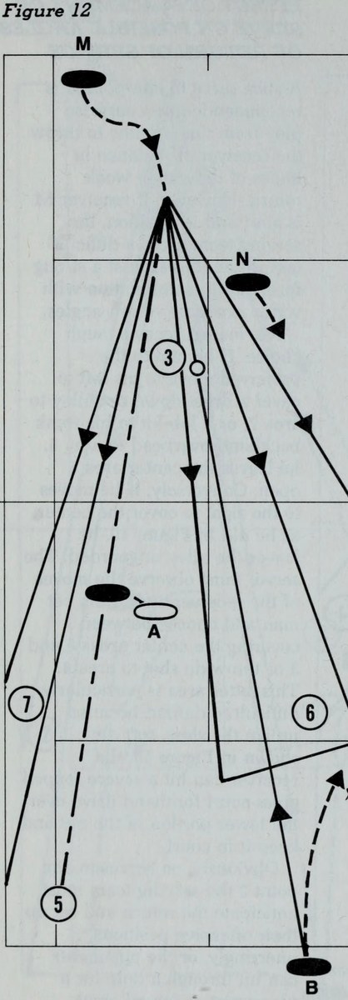
Thảm họa chiến thuật:
Một quả giao bóng rơi nông ở giữa ô giao bóng là một tai họa thực sự. Nó cho phép Receiver M bước vào trong sân cả mét, tiếp xúc bóng ở tầm cao ngang ngực khi bóng đang ở đỉnh nảy. M có thể dễ dàng:
- Bắn thẳng một cú búa bổ vào thắt lưng hoặc ngực của người đứng lưới A (biến A thành mục tiêu sống).
- Bắn quả passing sạt vạch biên dọc dây (down the alley) mà A không kịp trở tay.
- Đánh bóng gắt chéo sân chìm xuống dưới mép lưới ngay mũi giày của Server B.
CÁC ĐỘI HÌNH GIAO BÓNG DỊ BIỆT (UNCONVENTIONAL SERVING FORMATIONS)
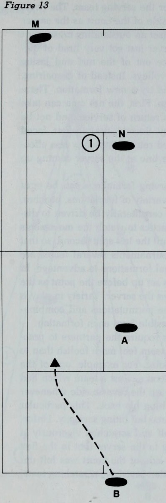
Đội hình kiểu Úc (Hình 13A):
Cả người giao bóng B và người đứng lưới A đều đứng cùng trên một nửa phần sân. Chiến thuật này triệt tiêu hoàn toàn cú trả giao bóng chéo sân sở trường của đối thủ (đặc biệt khi đối thủ có cú trái tay chéo sân quá hiểm). Nếu đối thủ muốn đánh chéo sân, quả bóng sẽ bay thẳng vào vợt của người đứng lưới A!
Đội hình chữ I (Hình 13B):
Người đứng lưới A ngồi xổm hoặc cúi thấp người ngay sát tâm lưới trên vạch chữ T. Khi B giao bóng qua đầu A, A sẽ bất ngờ bật dậy di chuyển sang trái hoặc sang phải theo tín hiệu ám hiệu tay đã thống nhất trước, khiến người đón bóng hoàn toàn mất phương hướng phán đoán.
TRẢ GIAO BÓNG (RETURN OF SERVICE)
Một cú trả giao bóng chuẩn mực, ổn định và có chiều sâu chính là chìa khóa mở ra cánh cửa vĩ đại trong cả đánh đơn lẫn đánh đôi. Đây là một trong những cú đánh khó làm chủ nhất trong quần vợt bởi người chơi phải xử lý một quả bóng có vận tốc xé gió, biến hóa độ xoáy khôn lường và chỉ có vỏn vẹn dưới nửa giây để phản xạ.
VỊ TRÍ ĐÓN GIAO BÓNG TRONG ĐÁNH ĐƠN (BASIC RECEIVING POSITIONS)
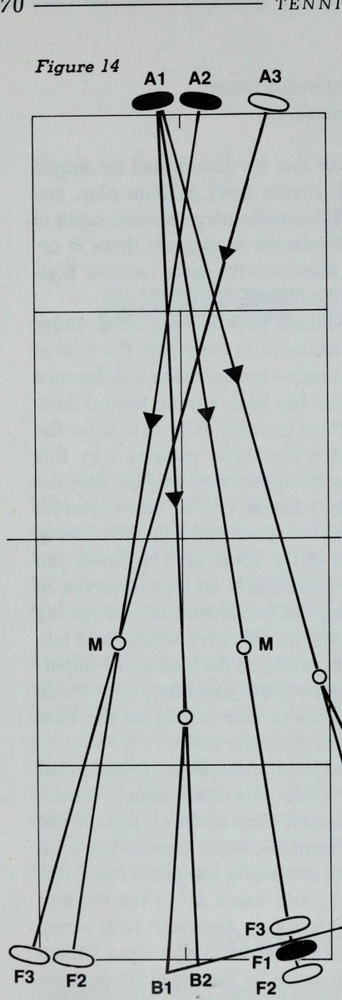
Nguyên lý chia đôi góc hình học:
Vị trí đón bóng tối ưu luôn nằm trên đường phân giác của góc tạo bởi hai đường giới hạn biên giao bóng của đối thủ. Vị trí F1 dành cho đón cú giao bóng phẳng hoặc slice (đứng cách vạch cuối sân khoảng 0.5m). Vị trí F2 lùi sâu hơn và chếch sang trái để đón cú xoáy cống (twist serve) nảy vọt lên cao.
HÓA GIẢI MÁY GIAO BÓNG LÊN LƯỚI TRONG ĐÁNH ĐƠN (RETURNS VS. NET-RUSHER)
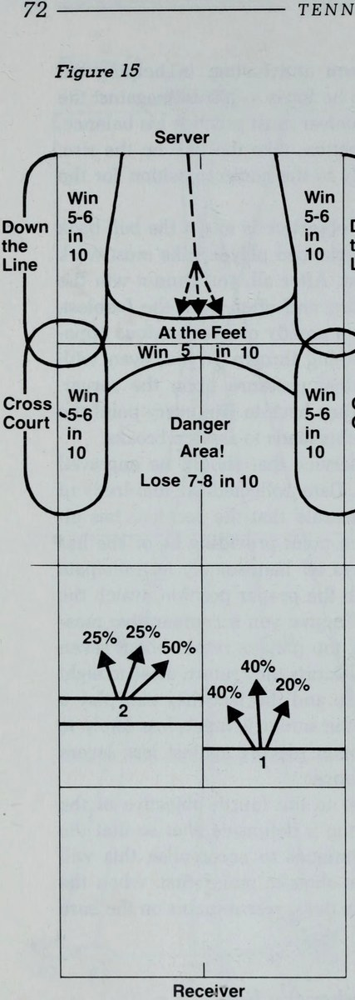
Ma trận chiến thuật:
- Trả bóng chìm vào chân (At the feet — 50% số lần): Lựa chọn hiệu quả số 1. Ép người giao bóng đang lao lên phải bắt vô-lê dưới mép lưới (low volley), tạo cơ hội dứt điểm ở cú đánh kế tiếp.
- Bắn dọc dây (Down the Line — 25% số lần): Cú đánh có độ rủi ro cao hơn nhưng ăn điểm trực tiếp nếu đối thủ chậm chân.
- Ép chéo sân sắc bén (Cross Court — 25% số lần): Buộc đối thủ phải rướn người cứu bóng mạn sườn.
ĐỐI PHÓ ĐỐI THỦ CỐ THỦ CUỐI SÂN (RETURNS VS. BASELINE SERVER)
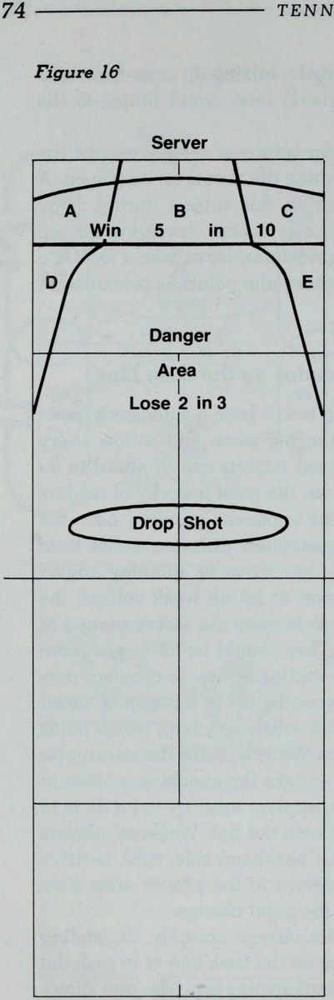
Quy tắc chiều sâu tuyệt đối:
Trái ngược với việc trả bóng chìm thấp khi đối thủ lên lưới, khi đối thủ ở lại vạch cuối sân, mục tiêu tối thượng là độ sâu (depth). Trả bóng rơi sâu trong vòng 1.5m trước vạch cuối sân, nảy cao để ghim chặt đối thủ ra sau, tước đoạt hoàn toàn cơ hội tấn công của họ.
TRẢ QUẢ GIAO BÓNG SÂU TRONG ĐÁNH ĐÔI (RETURNS OF DEEP SERVES)
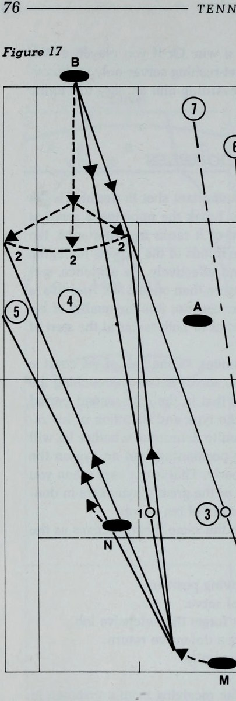
Chiến thuật vàng trong đánh đôi:
Khi đối thủ giao một quả bóng sâu và hiểm hóc, 90% số cú trả giao bóng phải được hướng chéo sân (crosscourt) chìm xuống chân người giao bóng B đang lao lên. Tuyệt đối không được đánh lỏng lẻo vào giữa hoặc hấp tấp đánh dọc dây vì người đứng lưới A của đối phương đang rình rập để đập bóng kết thúc điểm ngay lập tức.
TRỪNG PHẠT QUẢ GIAO BÓNG NGẮN TRONG ĐÁNH ĐÔI (RETURNS OF SHALLOW SERVES)
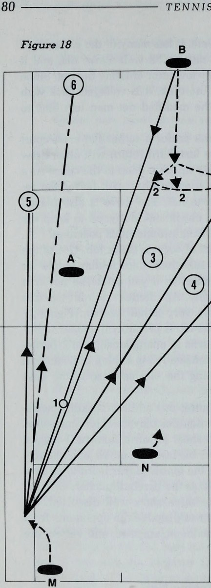
Quyền chủ động tấn công thuộc về bạn:
Bóng giao ngắn là món quà vô giá cho người đón bóng. Hãy dấn thân vào sân và tung ra một trong ba đòn trừng phạt:
- Bắn thẳng vào ngực/thắt lưng người đứng lưới A: Ở cự ly cực gần, đối thủ không có thời gian phản xạ.
- Xé toạc hành lang biên dọc dây (Down the alley): Đòn dứt điểm lạnh lùng khi A có xu hướng nghiêng người vào giữa.
- Góc chéo sân cực gắt (Sharp crosscourt): Đưa bóng rơi chìm vào mang cá.
CHIẾN THUẬT LƯỚI BIẾN ĐỔI TẤN CÔNG (OFFENSIVE MODIFIED NET PLAY)
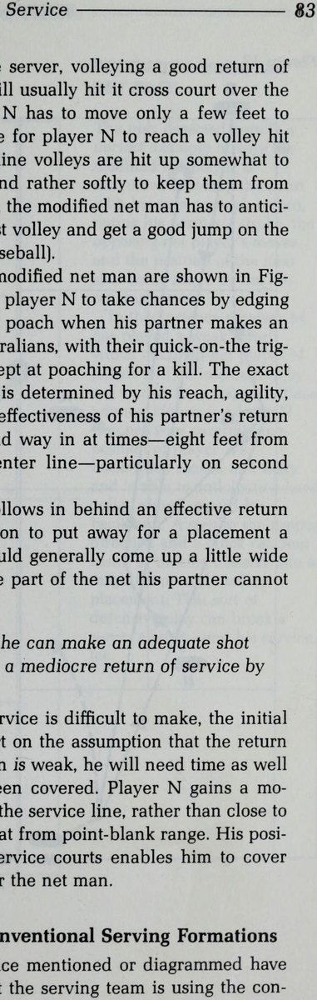
Phối hợp nhịp nhàng:
Tại sao các đôi hàng đầu luôn xếp đồng đội người đón bóng N ở vị trí “Lưới biến đổi” (gần vạch T giao bóng)? Bởi vì nếu M tung ra một cú trả giao bóng chìm thấp hiểm hóc khiến Server B phải cúi người múc bóng lên, N sẽ lập tức dâng nhanh 2–3 bước áp sát mép lưới để đón quả bóng nảy bổng đó và vồ gọn điểm số bằng một cú smash hoặc vô-lê cắm thẳng xuống đất!
CHIẾN THUẬT LƯỚI BIẾN ĐỔI PHÒNG NGỰ (DEFENSIVE MODIFIED NET PLAY)
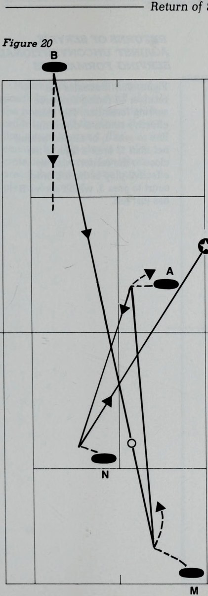
Bảo toàn tính mạng và thế trận:
Ngược lại với Hình 19, nếu M trả bóng lỗi khiến quả bóng bay bổng lơ lửng ngay tầm vợt của người đứng lưới đối phương A, N đứng ở vạch T sẽ có đủ thời gian và cự ly để lùi nhanh 2 bước về phía vạch cuối sân, thủ thế phòng ngự thấp trọng tâm để đỡ cú smash đập sấm sét của A thay vì bị biến thành mục tiêu bắn phá nếu đứng quá gần lưới.
BẺ GÃY CÁC ĐỘI HÌNH GIAO BÓNG DỊ BIỆT (RETURNS VS. UNCONVENTIONAL FORMATIONS)
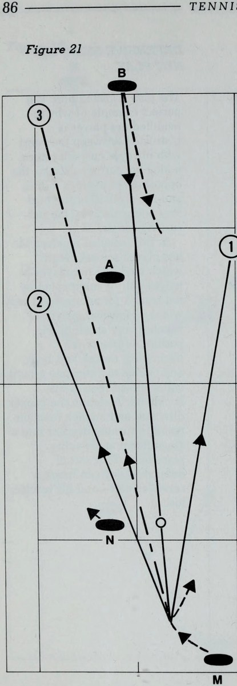
Phương án hóa giải:
Khi đối phương sử dụng Đội hình Úc hoặc Chữ I (cả hai người cùng che chắn mạn chéo sân), họ buộc phải bỏ trống toàn bộ hành lang thẳng dọc dây (open down-the-line alley). Phương án tối ưu:
- Đòn 1: Bắn thẳng dọc dây: Cú trả bóng sạt vạch biên dọc dây thẳng vào góc sân trống buộc người giao bóng phải chạy cắt ngang sân trong tuyệt vọng.
- Đòn 2: Lốp bóng qua đầu (Offensive Lob): Đưa bóng bổng vồng qua đầu người đứng lưới đang ngồi xổm hoặc rình rập, ghim chặt họ về cuối sân.
CHIẾN THUẬT TRÊN LƯỚI (NET PLAY)
Khả năng tác chiến trên lưới là điều kiện tiên quyết mang tính sống còn đối với một lối chơi quần vợt toàn diện (all-court game). Trong cả đánh đơn lẫn đánh đôi, quyền kiểm soát lưới đại diện cho vị trí tấn công tối thượng. Như đã được chứng minh qua số liệu thực nghiệm ở Bảng 8, đội nào chiếm lĩnh được lưới sẽ nắm trong tay tới 74% cơ hội đoạt điểm trong đánh đôi và 63.5% trong đánh đơn.
Để trở thành một bậc thầy trên lưới, người chơi không chỉ cần kỹ thuật vô-lê và đập bóng smash thuần thục, mà quan trọng hơn cả là phải nắm vững khoa học hình học của sự di chuyển, khả năng phán đoán đường bóng trước khi đối thủ vung vợt, và nghệ thuật phối hợp đồng đội nhịp nhàng như một khối thống nhất.
BỨC TƯỜNG VÔ-LÊ LÒNG CHẢO (THE CONCAVE VOLLEY WALL)
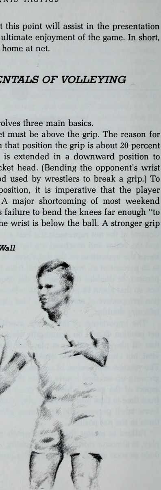
Phân tích chiến thuật chuyên sâu:
Khi bóng đang ở phần sân bên mạn trái của đối thủ, người đứng lưới cùng phía với bóng (Player A) sẽ dâng cao áp sát mép lưới hơn (cách lưới khoảng 2m) để sẵn sàng bắt quả bóng bay chéo sân hoặc dọc dây ngắn. Đồng đội (Player B) ở mạn đối diện sẽ lùi sâu hơn một chút (cách lưới khoảng 3m đến 3.5m) để che chắn đường bóng lốp chéo sân và phản công nhanh.
Hai người chơi tạo thành một mặt cong hướng lõm về phía quả bóng của đối thủ — được gọi là “Bức tường lòng chảo” (Concave Volley Wall). Khi bóng dịch chuyển sang góc đối diện, vị trí của hai người lập tức đảo chiều nhịp nhàng như hai đầu của chiếc bập bênh.
TIẾN LÊN LƯỚI SAU CÚ GIAO BÓNG (CAPTURING THE NET BEHIND SERVE)
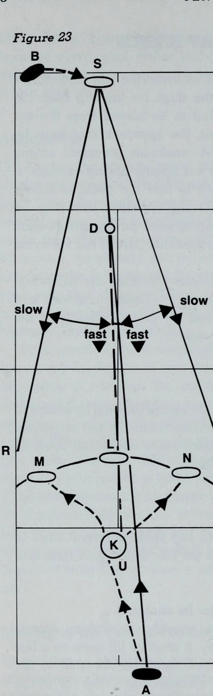
Phân tích chiến thuật chuyên sâu:
Hình 23A: Tiếp cận lưới trực diện khi giao bóng sâu vào góc chữ T trung lộ. Đây là lộ trình ngắn nhất, giúp người giao bóng nhanh chóng đạt được vị trí cân bằng trên vạch giao bóng T ngay khi đối thủ chạm vợt.
Hình 23B: Tiếp cận lưới theo hình vòng cung nhẹ khi giao bóng mở rộng ra biên ngoài. Người giao bóng phải hơi chếch đường chạy theo hướng bóng để khép chặt góc đánh dọc dây phản công của người đón bóng.
TIẾN LÊN LƯỚI SAU CÚ TRẢ GIAO BÓNG (NET BEHIND RETURN OF SERVICE)
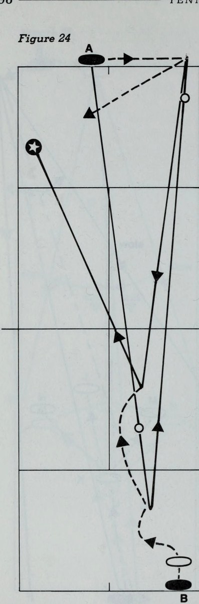
Phân tích chiến thuật chuyên sâu:
Khi đối thủ giao một quả bóng 2 nhẹ hoặc bóng nảy lơ lửng, Receiver B lập tức bước vào trong sân, tung ra cú cắt bóng chìm hiểm hóc (chip) vào góc sân trống hoặc thẳng vào chân người giao bóng, rồi lập tức phi thân lên lưới. Đòn đánh này biến người đón bóng thành kẻ tấn công chủ động, cướp đoạt hoàn toàn thế trận trên lưới của đối phương.
TIẾN LÊN LƯỚI SAU CÚ TIẾP CẬN CUỐI SÂN (APPROACH SHOT)
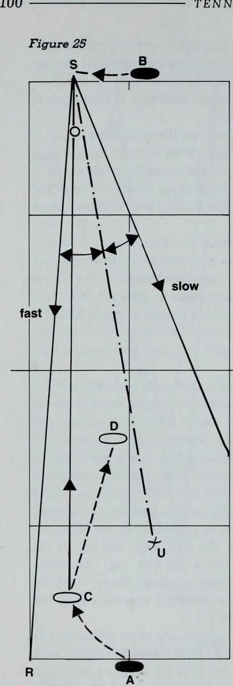
Phân tích chiến thuật chuyên sâu:
Cú đánh tiếp cận (Approach shot) phải được đánh sâu vào góc sân đối phương, và người chơi phải di chuyển theo chính đường bóng của mình. Đánh bóng dọc dây và chạy theo đường thẳng lên lưới sẽ thu hẹp tối đa quãng đường chạy và bịt kín góc passing shot nguy hiểm nhất của đối thủ.
TIẾN LÊN LƯỚI SAU CÚ LỐP BÓNG TẤN CÔNG (NET BEHIND A LOB)
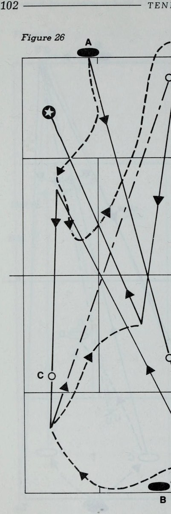
Phân tích chiến thuật chuyên sâu:
Khi bị đối phương dồn ép trên lưới, bạn tung ra một cú lốp bóng xoáy cuộn (topspin lob) qua đầu đối thủ rơi sâu sát vạch cuối sân. Ngay khi bóng bay qua khỏi tầm với của họ, bạn và đồng đội phải lập tức dâng nhanh lên chiếm giữ mép lưới. Đối thủ phải quay lưng đuổi theo bóng về cuối sân và chỉ có thể cứu bóng trong thế bị động, dâng cơ hội vô-lê kết liễu cho bạn.
NGHỆ THUẬT PHÁN ĐOÁN ĐƯỜNG BÓNG (ANTICIPATION IN ACTION)
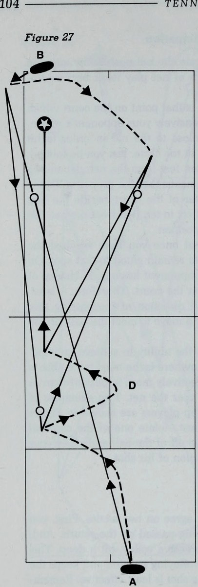
Phân tích chiến thuật chuyên sâu:
Phán đoán không phải là sự suy đoán vu vơ, mà là việc đọc các tín hiệu cơ thể của đối thủ trước thời điểm tiếp xúc bóng: góc mở của vai, vị trí chân trụ, độ cao của điểm chạm bóng và quán tính vung vợt. Người đứng lưới xuất sắc bắt đầu di chuyển một phần mười giây trước khi bóng rời mặt vợt đối thủ.
BẢN ĐỒ TỔNG HỢP CÚ VÔ-LÊ ĐẦU TIÊN (COMPOSITE FIRST-VOLLEY TACTICS)
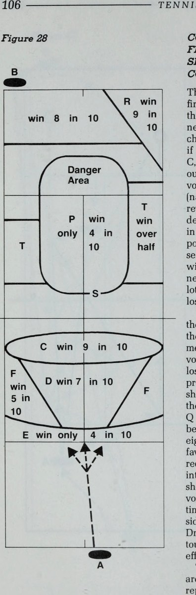
Phân tích chiến thuật chuyên sâu:
Cú vô-lê đầu tiên (First Volley) thường được thực hiện ở vị trí lân cận vạch giao bóng T. Đây hiếm khi là cú đánh ăn điểm ngay, mà là cú đánh thiết lập thế trận: đẩy bóng sâu vào góc yếu của đối thủ, hoặc vô-lê chìm thấp để buộc đối thủ phải đánh ngửa bóng lên, tạo điều kiện cho cú vô-lê thứ hai áp sát lưới dứt điểm.
NGHỆ THUẬT ĐIỀU HƯỚNG CÚ VÔ-LÊ (PLACING THE VOLLEY)
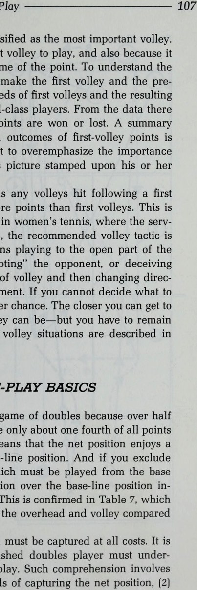
Phân tích chiến thuật chuyên sâu:
Khi bóng đến ở tầm cao trên lưới: tấn công mạnh mẽ vào khoảng trống xa nhất của đối phương. Khi bóng đến ở tầm thấp dưới mép lưới: mềm mại đẩy bóng sâu vào chân đối thủ hoặc thả góc ngắn chìm xuống mang cá.
VỊ TRÍ ĐỨNG LƯỚI VÀ DỊCH CHUYỂN ĐỒNG BỘ (NET POSITION & ADJUSTMENTS)
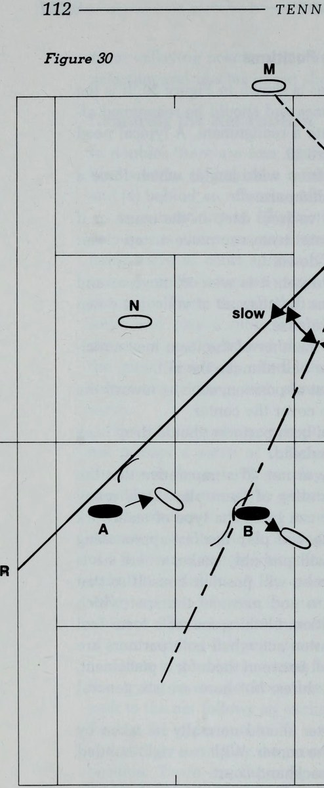
Phân tích chiến thuật chuyên sâu:
Hai người chơi đứng lưới phải luôn cảm giác như có một sợi dây thừng dài khoảng 3 mét nối giữa hai người. Khi một người dạt sang trái, người kia phải bị kéo theo sang trái; khi một người tiến lên, người kia bọc lót phía sau. Tuyệt đối không để xảy ra khoảng hở lớn ở trung lộ.
ĐIỂM NGẮM CHO CÚ VÔ-LÊ ĐẦU TIÊN (AIM POINTS FOR FIRST VOLLEYS)
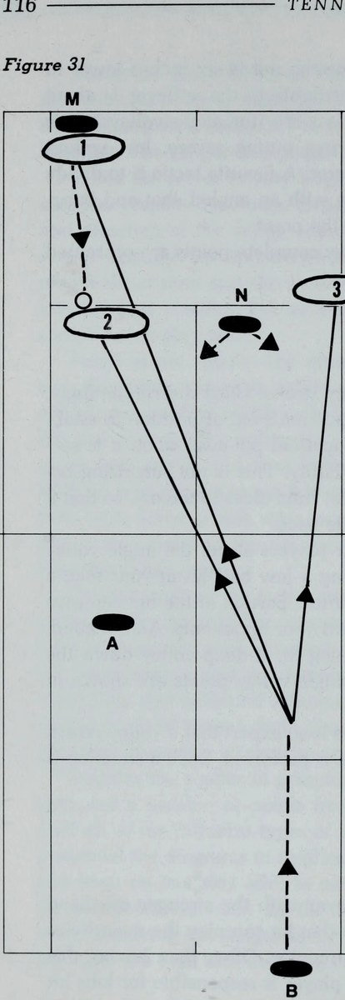
Phân tích chiến thuật chuyên sâu:
Vùng 1: Giữa sân sâu sát vạch cuối sân (khoét vào khoảng trống giữa hai đối thủ). Vùng 2: Góc sân mạn trái tay của người đón bóng. Vùng 3: Thả bóng ngắn chéo góc khi đối thủ đứng lùi quá sâu.
CÚ VÔ-LÊ SÂU XUYÊN THỦNG TRUNG LỘ (DEEP VOLLEY THROUGH THE MIDDLE)
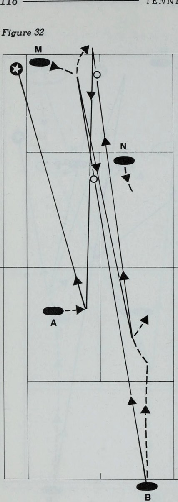
Phân tích chiến thuật chuyên sâu:
Vô-lê bóng sâu vào chính giữa sân giữa hai đối thủ gây ra sự do dự: “Của anh hay của tôi?”. Trong tích tắc chần chừ đó, quả bóng bay sát vạch cuối sân và khiến cả hai đối thủ va vợt vào nhau hoặc để bóng trôi qua.
CÚ VÔ-LÊ SÂU ÉP VÀO GÓC TRÁI TAY (DEEP VOLLEY TO THE BACKHAND CORNER)
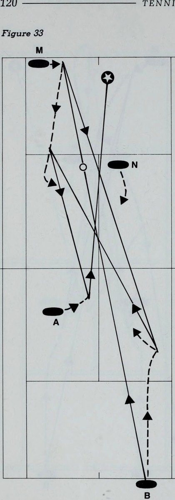
Phân tích chiến thuật chuyên sâu:
Hầu hết các tay vợt phong trào và bán chuyên đều gặp khó khăn lớn khi phải thực hiện cú đánh cứu bóng phòng ngự bằng quả trái tay ở vị trí lùi sâu sát hàng rào. Cú vô-lê sâu xoáy trượt này buộc đối thủ chỉ có thể lốp bóng bổng cầu may.
CÚ VÔ-LÊ SÂU ĐỔI HƯỚNG DỌC DÂY (DEEP DOWN-THE-LINE VOLLEY)
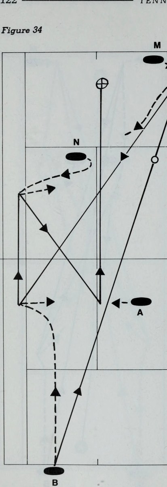
Phân tích chiến thuật chuyên sâu:
Khi đối thủ phán đoán bạn sẽ vô-lê chéo sân và bắt đầu nghiêng người chạy sang ngang, hãy mở mặt vợt nhẹ và đẩy quả vô-lê thẳng dọc dây ngược hướng di chuyển của họ. Đây là cú đánh ghi điểm dứt khoát.
CÚ VÔ-LÊ SÂU KHÓA CHẶT ĐỐI THỦ LÙI XA (DEEP PINNING VOLLEY)
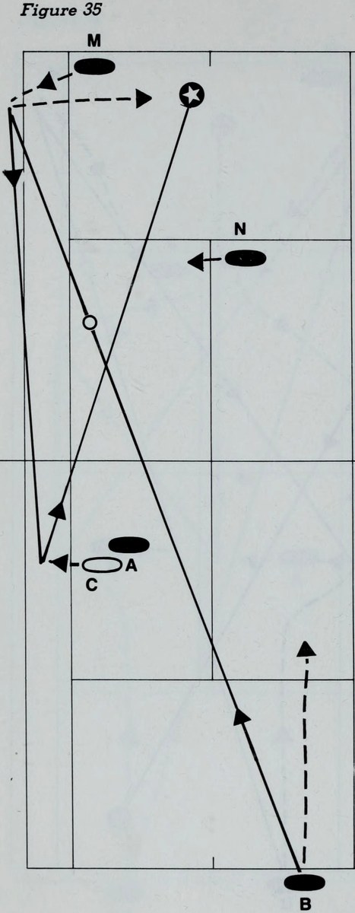
Phân tích chiến thuật chuyên sâu:
Khi chưa có góc thuận lợi để dứt điểm, hãy kiên nhẫn tung ra cú vô-lê sâu rơi sát vạch cuối sân để ghì chặt cả hai đối thủ ở xa lưới, chờ đợi một cơ hội bóng nảy bổng thuận lợi hơn ở nhịp sau.
CÚ VÔ-LÊ GÓC NGẮN CHÉO SÂN (THE CROSSCOURT ANGLE VOLLEY)
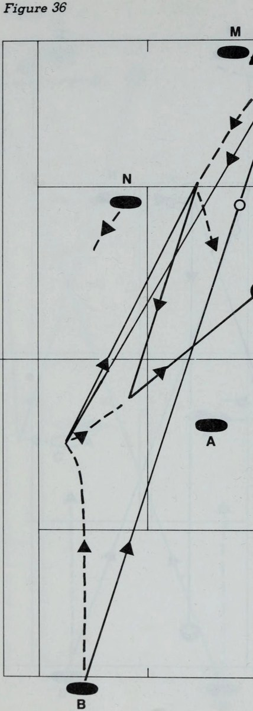
Phân tích chiến thuật chuyên sâu:
Tiếp xúc bóng nhẹ nhàng phía trên mép lưới, góc vợt hơi chéo để gạt bóng lăn sang mép vạch biên ngang gần lưới. Quả bóng nảy thấp và trôi thẳng ra ngoài hàng rào sân, khiến đối thủ hoàn toàn bất lực dù có tốc độ chạy nhanh đến đâu.
CÚ VÔ-LÊ GÓC NGẮN TẠO XOÁY CẮT (THE SHARP SLICE ANGLE VOLLEY)
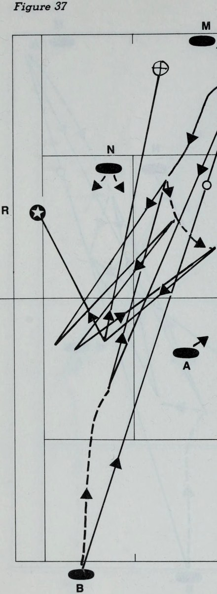
Phân tích chiến thuật chuyên sâu:
Bằng cách miết mặt vợt từ trong ra ngoài kết hợp góc cắt, bóng khi chạm đất sẽ rẽ ngoặt theo hướng vuông góc với đường bay ban đầu, triệt tiêu hoàn toàn khả năng vớt bóng của đối phương.
QUYẾT ĐỊNH BỎ QUA CÚ VÔ-LÊ ĐẦU TIÊN (ELECTING NOT TO PLAY THE FIRST VOLLEY)
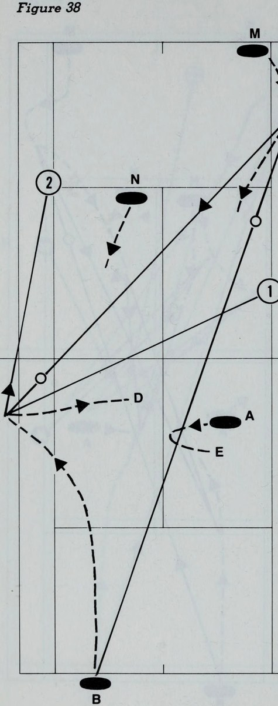
Phân tích chiến thuật chuyên sâu:
Một sai lầm rất phổ biến của người mới chơi là cố chạm vợt vào mọi quả bóng bay qua lưới. Nếu cú đánh của đối phương đi quá cao và có lực bay xé gió, việc bạn giơ vợt ra với chạm bóng thường chỉ dẫn đến quả vô-lê hỏng rúc lưới hoặc bồng bềnh ra ngoài. Hãy bình tĩnh né người để bóng tự bay ra ngoài biên (Out)!
CÚ ĐẬP BÓNG TRÊN ĐẦU DỨT ĐIỂM (OVERHEAD SMASH WINNER)
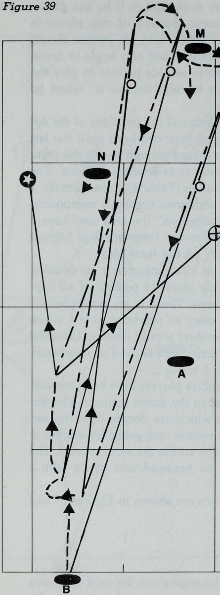
Phân tích chiến thuật chuyên sâu:
1. Nghiêng vai ngay lập tức, tay không cầm vợt chỉ thẳng lên quả bóng trên không để đo cự ly. 2. Di chuyển lùi bằng các bước chân ngang (side-steps) sao cho bóng luôn ở phía trước trán. 3. Vung vợt đập bóng ở điểm cao nhất có thể, gập cổ tay dứt khoát đưa bóng cắm xuống sân đối phương.
CÚ SMASH CHIẾN THUẬT AN TOÀN (TACTICAL OVERHEAD PLACEMENT)
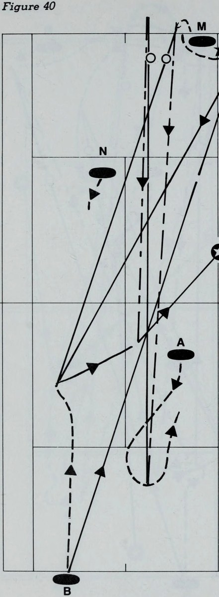
Phân tích chiến thuật chuyên sâu:
Khi quả lốp của đối phương rơi sâu gần vạch giao bóng, đừng cố gắng đập dứt điểm ăn điểm ngay với 100% lực vì rủi ro rúc lưới là rất lớn. Hãy thực hiện một cú đập bóng có xoáy slice sâu về góc xa với 75% lực để giữ vững thế trận tấn công.
CÚ VÔ-LÊ ÊM HÃM LỰC (THE SOFT VOLLEY)
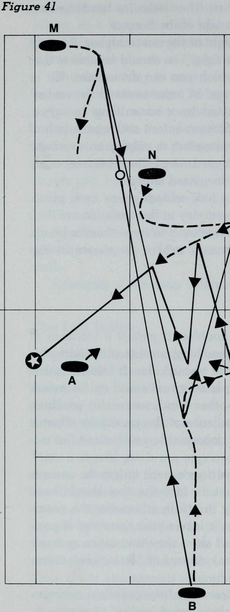
Phân tích chiến thuật chuyên sâu:
Khi đối phương tung cú passing shot như búa bổ, bạn không được đẩy vợt tới trước. Hãy thả lỏng cổ tay và hơi thu vợt về sau một chút ngay tại thời điểm bóng chạm mặt vợt để hấp thụ toàn bộ lực nén, khiến bóng rụng êm như chiếc lá ngay sau mép lưới.
CÚ BỎ NHỎ VÔ-LÊ SÁT LƯỚI (THE DROP VOLLEY)
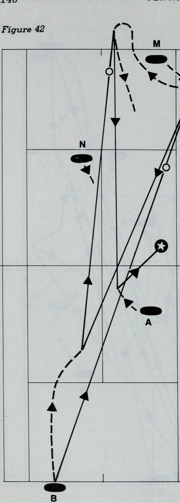
Phân tích chiến thuật chuyên sâu:
Mặt vợt ngửa ra phía sau và kéo xiên từ trên xuống dưới đáy quả bóng để tạo độ xoáy ngược (backspin). Bóng chỉ vừa qua mép lưới vài centimet và nảy giật lùi lại, hoàn toàn không cho đối thủ cơ hội chạm vợt.
CÚ LỐP BÓNG VÔ-LÊ QUA ĐẦU (THE LOB VOLLEY)
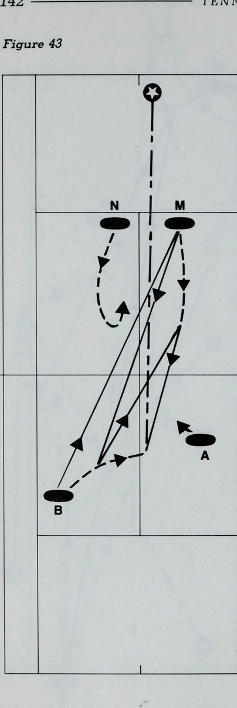
Phân tích chiến thuật chuyên sâu:
Khi đối thủ áp sát rạt mép lưới để đè bẹp bạn, thay vì đánh trả bóng thấp, hãy mở mặt vợt đẩy nhẹ một cú vô-lê hình cầu vồng bổng qua tầm với đầu của họ. Bóng rơi sâu sau lưng đối thủ khiến họ trở tay không kịp.
CÚ ĐÁNH BÓNG CHẠM ĐẤT CẬN LƯỚI (FORECOURT GROUND STROKES)
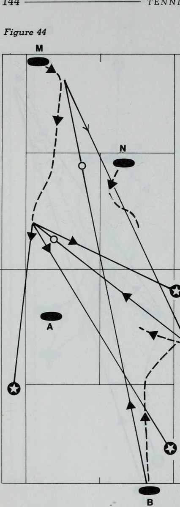
Phân tích chiến thuật chuyên sâu:
Nếu bóng rơi chạm đất ngay trước vạch giao bóng T, bạn không cần bắt vô-lê mà có thể vung vợt thực hiện một cú drive ngắn dứt khoát với độ xoáy cuộn chìm nhanh xuống chân đối thủ.
CHIẾN THUẬT BẮT BÀI CƯỚP LƯỚI (THE POACH)
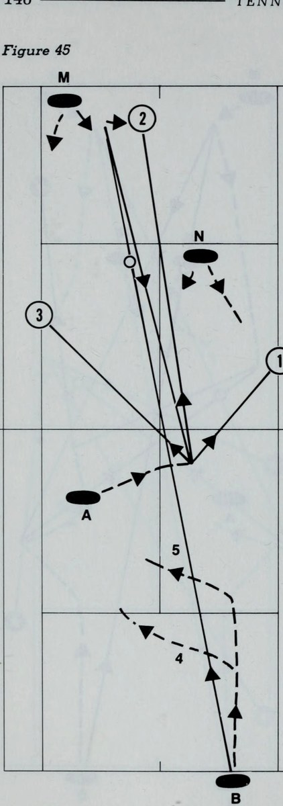
Phân tích chiến thuật chuyên sâu:
Ngay khi người đón bóng đối phương bắt đầu vung vợt để thực hiện cú trả giao bóng chéo sân theo thói quen, người đứng lưới A lập tức lao chéo về phía trước sang mạn sân bên kia ở góc khoảng 45 độ, cắt ngang đường bay của bóng và vung vợt vô-lê cắm thẳng vào khoảng trống giữa hai đối thủ.
CÚ BẮT BÀI PHÒNG NGỰ THẦN SẦU (A FANTASTIC DEFENSIVE POACH)
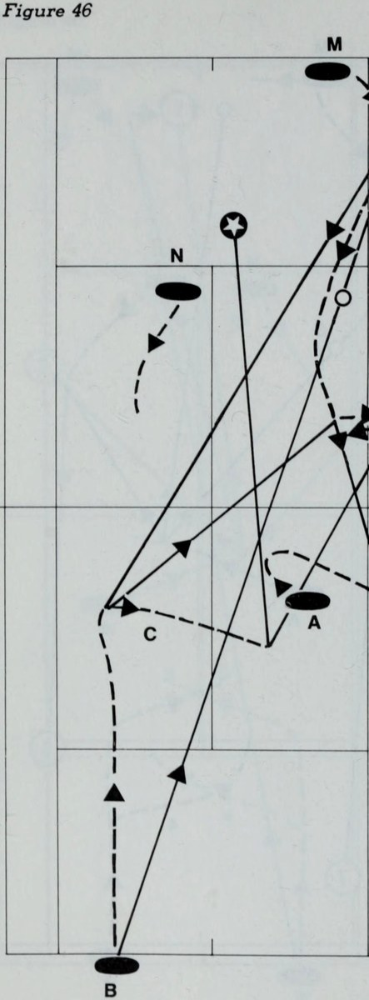
Phân tích chiến thuật chuyên sâu:
Đồng đội của bạn bị đối thủ ép sâu ra ngoài góc sân và chỉ có thể trả bóng với chất lượng trung bình. Nhận thấy đối thủ đang dồn toàn bộ chú ý để chuẩn bị tung cú dứt điểm chéo sân, bạn bất ngờ bay người cắt ngang mặt lưới để chặn đứng đường bóng, biến bàn thua mười mươi thành điểm thắng ngoạn mục.
CHIẾN THUẬT DẠT VỊ TRÍ CỦA ĐỘI GIAO BÓNG (THE SERVING TEAM DRIFT)
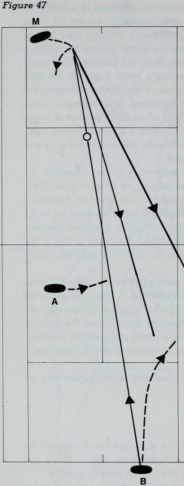
Phân tích chiến thuật chuyên sâu:
Khi Server B giao bóng ép góc ra biên ngoài, cả Server B và Netman A cùng dạt nhẹ sang bên phải khoảng 1 đến 1.5 mét để bọc lót hoàn hảo cho góc đánh trả khả thi của đối thủ. Sự dịch chuyển đồng bộ này bịt kín mọi lối thoát của đối phương.
CHIẾN THUẬT DẠT VỊ TRÍ CỦA ĐỘI ĐÓN BÓNG (THE RECEIVING TEAM DRIFT)
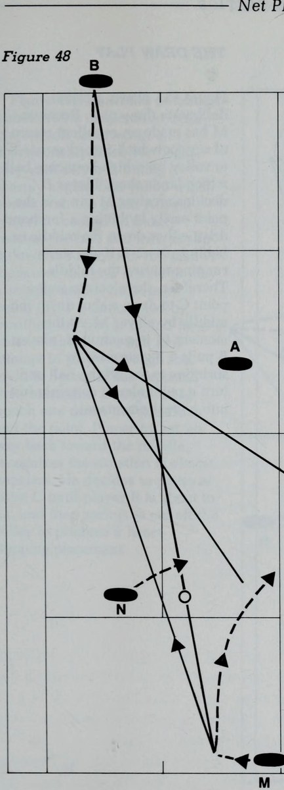
Phân tích chiến thuật chuyên sâu:
Khi Receiver M thực hiện cú trả bóng chéo sân sâu, đồng đội N đứng lưới lập tức dạt nhẹ về phía trung tâm để bịt kín góc vô-lê phản công của đối phương, sẵn sàng vồ bóng nếu đối thủ vô-lê thiếu lực.
ĐÒN DỤ KÉO ĐỐI THỦ (THE DRAW PLAY)
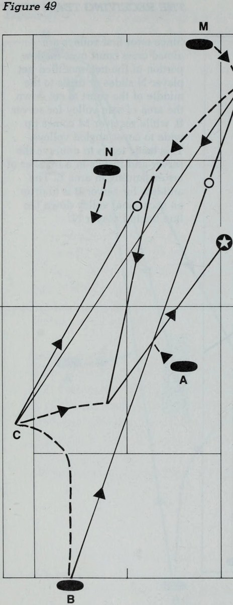
Phân tích chiến thuật chuyên sâu:
Người đứng lưới cố tình đứng hơi lệch sang một bên, giả vờ để lộ một khoảng trống dọc dây rất hấp dẫn. Khi đối thủ nhìn thấy khoảng trống và hào hứng vung vợt bắn bóng dọc dây, người đứng lưới đã tính toán trước bước chân và lập tức bật sang đón lõng, đập nát quả bóng ghi điểm kết thúc ván đấu!
CHIẾN THUẬT CUỐI SÂN (BASE-LINE PLAY)
Ngoại trừ cú giao bóng và cú trả giao bóng đã được khảo cứu chuyên sâu ở các chương trước, toàn bộ các pha xử lý bóng từ vạch cuối sân tạo nên linh hồn của các loạt bóng bền (rallies). Ở đẳng cấp cao, tầm quan trọng của lối chơi cuối sân có sự phân hóa rõ rệt tùy thuộc vào mặt sân thi đấu: trên sân cỏ và sân cứng nhanh, lối chơi cuối sân mang tính bàn đạp để tiến lên lưới; trong khi trên sân đất nện chậm, nó chính là đấu trường quyết định sự sống còn của cả trận đấu.
CÚ ĐÁNH ÉP SÂN KINH ĐIỂN (CLASSICAL FORCING SHOTS)
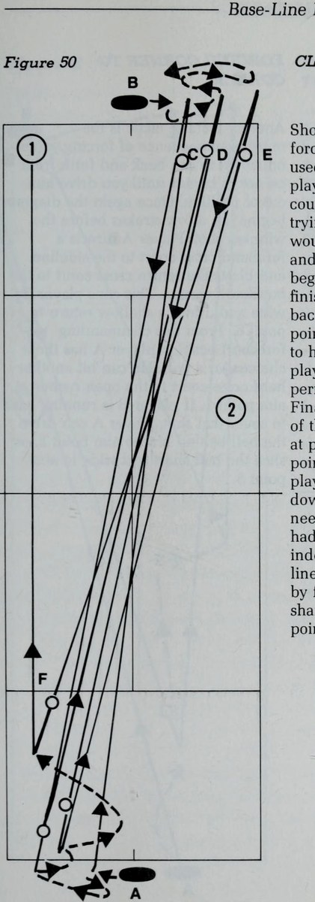
Phân tích chiến thuật chuyên sâu:
Trên mặt sân đất nện (clay court), các loạt bóng bền có thể kéo dài hàng chục cú đánh. Sơ đồ minh họa chuỗi đòn ép sâu từ mạn trái tay được các bậc thầy đất nện thi triển: bóng được ghim sâu sát vạch cuối sân với quỹ đạo xoáy cuộn topspin nảy cao, bào mòn thể lực và đẩy dần đối thủ ra xa khỏi sân đấu trước khi tung đòn quyết định.
ÉP ĐỐI THỦ CHẠY GÓC NÀY SANG GÓC KHÁC (FORCING CORNER TO CORNER)
Phân tích chiến thuật chuyên sâu:
Một chiến thuật yêu thích khác trong đánh đơn là chuỗi đòn ép góc liên hoàn: Tay vợt A bắn một cú thuận tay chéo sân ép sát vạch biên phải, khi đối thủ B vất vả trượt chân sang đỡ bóng trả về, A lập tức tung cú trái tay dọc dây sấm sét sang góc đối diện. Đối thủ bị kéo căng hết chiều ngang sân đấu và nhanh chóng kiệt sức hoặc đánh bóng hỏng.
LAO LÊN LƯỚI SAU CÚ ÉP SÂN (FOLLOWING A FORCING SHOT TO NET)
Phân tích chiến thuật chuyên sâu:
Cú giao bóng mở rộng của Server A đã kéo Receiver B văng ra khỏi sân và buộc phải trả bóng ngắn lơ lửng vào giữa. Chiến thuật đúng đắn là không được chần chừ lùi lại: hãy lao tới trước, tung cú ép sân dọc dây uy lực và lập tức phi thân lên lưới chiếm giữ vị trí vô-lê dứt điểm.
CÁC ĐÒN ÉP CHIẾN THUẬT NHẮM VÀO ĐIỂM YẾU (TACTICAL FORCING SHOTS)
Phân tích chiến thuật chuyên sâu:
Nhận diện điểm yếu của đối thủ (ví dụ cú trái tay phòng ngự tầm cao nảy bổng), Player A liên tục nhồi bóng với độ xoáy cồng vào đúng góc đó. Khi đối thủ bị ức chế tâm lý và chỉ có thể trả bóng thiếu lực, A lập tức bước vào trong sân chuyển đổi thành đòn tấn công kết liễu.
CÚ BỎ NHỎ BẤT NGỜ TỪ VẠCH CUỐI SÂN (THE DROP SHOT)
Phân tích chiến thuật chuyên sâu:
Khi đối thủ bị dồn ép và có thói quen lùi sâu 2–3 mét sau vạch cuối sân để chờ bóng nảy, Player A giữ nguyên tư thế vung vợt thuận tay mạnh mẽ như sắp tung cú búa bổ, nhưng ở tích tắc chạm bóng lại bất ngờ thả lỏng cổ tay, mở mặt vợt miết xoáy ngược để thả bóng rụng sát mép lưới đối phương. Đối thủ dù có ba chân bốn cẳng cũng không thể cứu bóng kịp.
CHIẾN THUẬT PASSING SHOT KINH ĐIỂN (CLASSICAL PASSING TACTICS)
Phân tích chiến thuật chuyên sâu:
Khi đối thủ lao lên lưới, người đứng cuối sân có 3 lựa chọn passing shot: 1. Bắn dọc dây sạt vạch biên; 2. Ép chéo sân sắc bén qua mép lưới thấp nhất; 3. Bắn thẳng chìm vào chân người đang lao lên. Sự đa dạng hóa điểm bắn khiến người lên lưới không thể bắt bài.
PASSING SHOT TRỪNG PHẠT SAI LẦM CHIẾN THUẬT (PASSING AFTER TACTICAL ERRORS)
Phân tích chiến thuật chuyên sâu:
Nếu đối thủ lao lên lưới nhưng cú tiếp cận (approach shot) của anh ta rơi nông ở giữa sân, bạn có thừa thời gian để căn chỉnh bước chân và tung ra cú passing shot dứt khoát đưa bóng vượt qua tầm với của anh ta một cách dễ dàng.
CÚ LỐP BÓNG BỔNG PHÒNG NGỰ (HIGH DEFENSIVE LOB)
Phân tích chiến thuật chuyên sâu:
Khi bị đối thủ dồn ép vào góc sân hiểm nghèo và không còn góc để passing, hãy tung ra một cú lốp bóng hình cầu vồng cực cao lên trời rơi sâu sát vạch cuối sân đối diện. Thời gian bóng bay bổng trên không (từ 3 đến 4 giây) cho phép bạn có đủ thời gian để hồi phục lại vị trí trung tâm sân và sẵn sàng cho loạt bóng mới.
ĐÒN DINK ĐÔI TIẾP CẬN LƯỚI (THE DOUBLE DINK APPROACH)
Phân tích chiến thuật chuyên sâu:
Cả hai tay vợt đều đang ở cuối sân đối đầu với hai đối thủ trên lưới. Thay vì cố gắng đánh mạnh ăn thua đủ, hai tay vợt thực hiện chuỗi cú đánh dink (cắt bóng mềm mại chìm thấp) qua mép lưới rơi xuống chân đối thủ, từ từ thu hẹp cự ly và đồng bộ tiến lên chiếm lĩnh lưới.
CÚ ĐÁNH DINK TIẾP CẬN ĐƠN LẺ (THE DINK APPROACH SHOT)
Phân tích chiến thuật chuyên sâu:
Một cú dink ngắn chéo sân chạm đất nảy thấp ép người đứng lưới đối phương phải cúi gập người vớt bóng lên từ dưới chân. Ngay khi bóng rời vợt, người thực hiện cú dink lập tức dâng lên lưới để đón quả bóng nảy bổng đó.
CÚ DRIVE XÉ TOẠC TRUNG LỘ (DRIVING THROUGH THE MIDDLE)
Phân tích chiến thuật chuyên sâu:
Trong đánh đôi, khi bị hai đối thủ giăng hàng ngang trên lưới, con đường an toàn và chết chóc nhất là tung cú drive phẳng hoặc xoáy xé toạc thẳng vào khe hở giữa hai người họ. Cú đánh này loại trừ nguy cơ đánh bóng ra ngoài biên và gây ra sự va chạm vợt giữa hai đối tác.
CÚ DRIVE XOÁY CUỘN TOPSPIN CHÌM (TOP-SPIN DRIVE)
Phân tích chiến thuật chuyên sâu:
Cú đánh thuận tay xoáy cuộn topspin cực mạnh tạo độ cong khí động học khiến bóng bay vút qua lưới rồi đột ngột cắm thẳng xuống chân người đứng lưới đối phương, tước đoạt hoàn toàn cơ hội vô-lê tấn công của họ.
KHOÉT VÀO ĐƯỜNG CHÉO MỞ TOANG (THE OPEN DIAGONAL)
Phân tích chiến thuật chuyên sâu:
Khi một đối thủ đứng lưới nghiêng người quá nhiều sang mạn dọc dây để che chắn hành lang biên, toàn bộ đường chéo sân (diagonal) sẽ mở toang. Một cú drive chéo góc sắc bén sẽ đưa bóng vào khoảng trống mênh mông không người bảo vệ.
CÚ LỐP BÓNG TẤN CÔNG TRONG ĐÁNH ĐÔI (THE OFFENSIVE LOB)
Phân tích chiến thuật chuyên sâu:
Khi hai đối thủ đứng lưới dâng quá sát mép lưới để đè bẹp bạn, hãy ngụy trang động tác như chuẩn bị drive mạnh rồi bất ngờ vung vợt cuộn một cú lốp bóng xoáy topspin bay vừa đủ cao qua đầu họ. Bóng rơi nhanh và nảy vọt ra xa sau lưng khiến họ không thể quay đầu cứu kịp.
CÚ LỐP BÓNG PHÒNG THỦ TRONG ĐÁNH ĐÔI (THE DEFENSIVE LOB)
Phân tích chiến thuật chuyên sâu:
Một cú lốp bóng phòng ngự cao vút đưa bóng bay bổng lên không trung, ép hai đối thủ trên lưới phải lùi sâu về tận vạch cuối sân để xử lý, đưa trận đấu trở lại vạch xuất phát bình đẳng.
PHỐI HỢP PHÒNG NGỰ ĐỒNG ĐỘI KIÊN CỐ (GOOD DEFENSIVE TEAM PLAY)
Phân tích chiến thuật chuyên sâu:
Hình 65 đúc kết tinh hoa của sự phối hợp đồng đội: Khi Player B bị đối thủ lốp bóng qua đầu phải chạy lùi về cứu bóng, đồng đội A lập tức hoán đổi vị trí (switch) di chuyển chéo sang bao quát phần sân đối diện. Hai người liên tục bọc lót cho nhau, không để lại bất kỳ khoảng trống chết nào trên sân.
TỔNG KẾT CHIẾN THUẬT & LỜI NHẮN GỬI
Mục tiêu tối thượng của cuốn sách này là gia tăng niềm vui, sự thấu hiểu sâu sắc và sự thỏa nguyện của bạn khi tham gia vào môn thể thao kỳ diệu này — dù bạn là một nhà vô địch giải đấu, một người mới bước vào sân tập, hay một khán giả say mê theo dõi trên khán đài.
1. Những nguyên lý chiến thuật chung bất biến
1. Thể lực và Sự kiên định
Quần vợt là một môn thể thao đòi hỏi sức bền thể lực phi thường kết hợp với độ tập trung cao độ. Không bao giờ được phép mất bình tĩnh hay buông xuôi bất kỳ một điểm số nào dù tỷ số đang là bao nhiêu.
2. Tầm quan trọng của Cú giao bóng 1
Hãy duy trì tỷ lệ giao bóng 1 vào sân tối thiểu 65% đến 70%. Một cú giao bóng 1 hiểm hóc và có kiểm soát mang lại lợi thế áp đảo lớn hơn nhiều so với một cú giao bóng phẳng hết lực nhưng tỷ lệ hỏng quá cao.
3. Chiếm lĩnh Lưới là Chìa khóa
Cả trong đánh đơn lẫn đánh đôi, khu vực trên lưới luôn là vị trí ghi điểm màu mỡ nhất. Hãy tích cực hoàn thiện kỹ năng tiếp cận lưới và vô-lê dứt điểm.
4. Độ sâu vượt lên trên Uy lực
Một cú đánh sâu rơi trong vòng 1 mét trước vạch cuối sân của đối thủ có giá trị chiến thuật lớn hơn nhiều so với một cú đập bóng cực mạnh nhưng rơi nông ở giữa sân.
2. Lời khuyên chia tay của Bill Talbert và Bruce Old
“Chiến thuật không phải là những công thức cứng nhắc trên trang giấy, mà là nghệ thuật tư duy sống động trên từng mét vuông sân đấu. Hãy luôn tôn trọng đối thủ, tôn trọng trọng tài và khán giả, và trên hết — hãy chơi thứ quần vợt thông minh, quả cảm và đầy ắp niềm vui!”
WILLIAM F. TALBERT & BRUCE S. OLD
New York, 1983